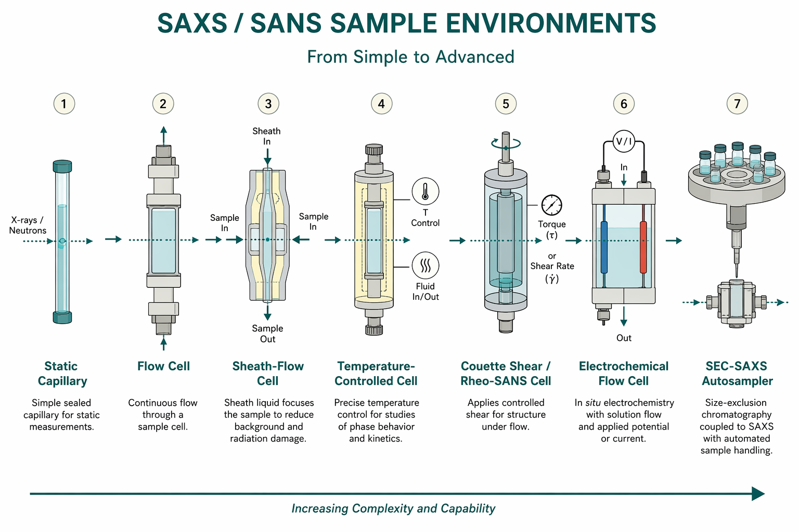

样品环境与原位条件
Capillaries, flow, temperature, shear, electrochemistry, and time-resolved soft-matter setups
本导读以 Jeffries 等（2021）SAS Primer 中的实验几何与样品实践为总览，结合 Blanchet 等（2015）生物 SAXS 多样品环境与自动化、Kirby 等（2016）护套流减辐射损伤、Urban 等（2021）软物质时间分辨 SANS 环境综述，以及可选的 Binninger 等（2016）电化学流动池，说明：样品池如何决定本底与前向散射质量、何种原位条件可测、以及环境装置如何进入数据还原链路。
问题是什么
SAS「看到」的是光路中一切密度起伏的叠加：样品、溶剂、窗材、气泡、温度梯度与剪切取向都会进入 $I(q)$。样品环境（sample environment）的任务不是「把液体装进束」，而是在可控热力学/流动/电化学条件下，把可复现的样品散射与可匹配的本底送到探测器，同时尽量降低辐射损伤与寄生散射。
对软物质与聚合物尤其重要：热历史、剪切史、溶剂挥发会改变 $q^*$ 峰位与取向；环境若引入梯度或延迟，会把真实动力学与装置响应卷积（Urban 2021）。对 BioSAXS：溶质散射仅占入射光子的 $\sim 10^{-6}$ 量级（Blanchet 2015），寄生散射直接限制可用低 $q$。
核心张力：
- 静态毛细管体积小、本底可控，但对同步辐射生物样品易损伤；
- 流动 / 护套流刷新照射体积，代价是流量、混合与窗材散射须纳入还原；
- 温控、剪切、电化学扩展科学问题，却引入窗厚、工作距离、透射变化与几何约束——尤其薄膜原位常转入 GISAXS 掠入射几何；
- 时间分辨要求环境的热/流/化学响应快于（或可建模于）帧时间，否则动力学被装置延迟卷积。

文献主线
Jeffries 2021：样品在整条测量链中的位置
Primer 将透射几何中的样品视为准直与束阻之间的关键节点：毛细管、石英池或固体片定义光路厚度与窗材；变温、变压、流动与剪切等条件使 SAS 能原位追踪软物质与生物体系的介观演化。强调：弱散射体系对寄生散射与本底匹配极度敏感；时间分辨实验须记录触发机制、帧时间与环境响应时间。材料科学原位（USAXS–SAXS–WAXS、微流控、凝胶）与生物溶液范式不同，但「同路径本底 + 透射监测 + 元数据」原则一致。
Blanchet 等 2015：生物 SAXS 多样品环境与自动化（P12）
PETRA III P12 束线综述（DOI: 10.1107/S160057671500254X）展示生物溶液 SAXS 的「标准工具箱」：
- 真空毛细管： 50 µm 石英壁、1.7 mm 光程，278–323 K 温控；真空路径降低空气与窗散射。标准 $s$ 窗 0.02–4.5 nm$^{-1}$（约 300–1.5 nm），换探测器距离可扩至 0.006–16 nm$^{-1}$。
- 低本底光学： scatterless slits（单晶刃口）显著压低低角寄生散射；2 mm 微型主动 beamstop 间接监测透射通量，改善归一化。
- 损伤控制： 三滤光轮衰减器（最高 $\sim 10^{15}$ 倍）+ 连续流动进样（典型 $20\times 50$ ms 子曝光）；机器人换样全程约 50 s/样品。
- SEC-SAXS： 色谱在线分离寡聚体/聚集体，可联 UV/RI/RALLS 与 $I(0)$、$R_g$ 迹线互证（ovalbumin 例：batch 模式 $\chi^2=5.6$ vs SEC 后 $\chi^2=2.0$）。
- 停流与微流控： SFM300 停流 dead time $\sim 3$ ms，33 ms 时间分辨；SAXS disc 离心微流控实现亚微升级筛选混合。
- SASFLOW 管线： 采集后数分钟内自动检查、归一化并生成低分辨模型。
环境选择应服从科学问题——静态筛选、SEC 分离、变温折叠或停流动力学——而非默认最复杂装置。
Kirby 等 2016：护套流（sheath flow）提升剂量效率
同步辐射下，静态毛细管中同一液体体积被反复照射，自由基与交联导致 $R_g$、$I(0)$ 漂移；缓冲液本身亦可在低 $q$ 损伤上翘。护套流用同溶剂鞘层包裹样品芯流：束主要照射新鲜样品，窗材附近为缓冲，在相同总曝光下降低有效辐射剂量、改善统计（DOI: 10.1107/S2059798316017174）。代价：芯/鞘流量比、对齐与窗本底须标定；本底仍须同路径匹配缓冲。
Urban 等 2021：软物质时间分辨 SANS 样品环境
综述面向中子时间分辨（DOI: 10.3390/app11125566），对 SAXS 用户同样具设计参考价值：
- 时间分辨策略： 事件模式（event mode）事后分 bin；周期性扰动（振荡剪切 LAOS）循环平均可达 100 ms 级；压力跳重复实验可达 10 ms/帧；连续过程可用「扰动点→束线位」距离换时间轴。
- 温控： 中子束斑 1–10 mm，温度梯度难避免；T-jump 不必追求世界纪录——6 °C 跳变、100 s 仍可得胶束塌缩动力学。可联用 DSC（$-150$–$500\,^\circ\mathrm{C}$）。
- 压力： 静水压均匀，适合微凝胶相变、SDS 微乳液球→柱转变；压力跳 $\Delta p\sim 200$ bar、50 ms 分辨示例。
- Rheo-SANS： Couette 池 1–3、2–3 散射面成熟；1–2 面（束平行剪切面）仍具挑战。软物质加工常须同时控温、剪切与化学历史。
- 中子优势： 厚窗、金属池体穿透好，适合高压/剪切池；通量较低，时间分辨依赖事件模式或循环平均。
Binninger 等 2016（可选）：电化学流动池原位 SAXS/XAS
同步辐射电化学流动池将工作电极、电解液流与薄窗 X 射线路径集成，使催化剂纳米结构可在电位扫描下原位 SAXS（并常联用 XAS）（DOI: 10.1149/2.0201610jes）。挑战：电极基底散射、气泡、电位诱导浓度极化，以及窗–电极几何对透射与可用 $q$ 的限制。适合能量材料与胶体电化学；与溶液 BioSAXS 的毛细管范式不同。
环境类型与实验含义
| 环境 | 典型用途 | 对数据的主要影响 | 须同步控制的量 |
|---|---|---|---|
| 静态毛细管 / 石英池 | 常规溶液、浓度系列 | 窗材与壁厚定本底；路径长定透射 | 壁厚一致性、气泡、温度 |
| 流动池 | 减损伤、连续进样 | 流速不足仍损伤；过快浪费样品 | 流量、死体积、稳定时间 |
| 护套流 | 高亮源生物样品 | 剂量效率↑；芯–鞘对齐敏感 | 芯/鞘流量比、窗本底 |
| 温控 | 相变、折叠、胶束化 | 梯度 → 表观多分散；热胀改路径 | 设定点、平衡时间、梯度 |
| 剪切 / rheo-SAS | 取向、屈服、结构破坏 | 2D 各向异性；须扇区积分 | 剪切速率、间隙、边缘效应 |
| 电化学流动池 | 电位下纳米结构 | 电极/气泡本底；透射随电位变 | 电位、流量、除气 |
| SEC-SAS / 自动化 | 分离寡聚、高通量 | 峰稀释改 $I(0)$；帧须对齐色谱 | 柱、流速、帧时钟 |
| 薄膜原位（常 GISAXS） | 溶胀、退火、反应 | 掠入射几何主导；足迹与折射 | 入射角、气氛、温度 |
| 压力池 / 湿度 | 微凝胶、膜、孔隙材料 | 衬度随 $D_2O/H_2O$ 变； equilibration 慢 | 压力、湿度、平衡时间 |
| 停流 / 微流控 | 折叠、组装、胶束化 | 死时间、混合不完全；样品消耗大 | 死体积、帧时钟、浓度稀释 |
原位实验进入数据还原
环境不是「测完再管」的附件，下列量应写入元数据并进入还原公式：
- 几何： 窗材、壁厚、光程、剪切间隙、GISAXS 入射角 $\alpha_i$、探测器距离——决定 $q$ 映射与smearing。
- 本底： 匹配溶剂/空池在相同温度、流量、电位下测量；环境参数一变即重测本底。
- 透射： 主动 beamstop 或透射二极管监测；温控/气泡/电化学改变有效路径时须逐帧校正绝对强度。
- 时间对齐： SEC 帧对齐色谱迹线；停流/压力跳对齐触发时钟；循环实验记录周期相位。
- 损伤筛选： 子曝光比较 $R_g$、$I(0)$；剔除漂移帧（护套流可降低但仍须检查）。
聚合物/BCP 变温扫描须记录升/降温速率与平衡时间——Urban 2021 强调热历史决定最终形貌；把未平衡曲线当作平衡相图是常见误读。BCP 熔体 rheo-SAXS 须扇区积分；凝胶溶胀环境变更缓冲离子强度会同时改衬度与网络峰（可选交叉：Shibayama 2008 凝胶 SANS）。
按应用选环境（速查）
| 科学问题 | 推荐环境 | 文献 |
|---|---|---|
| 蛋白寡聚/聚集 | SEC-SAXS + UV；或护套流减损伤 | — |
| 折叠/结合动力学（ms–s） | 停流；秒级可用流动进样 | — |
| BCP 相变 / ODT | 温控池 + 变温序列；注意平衡 | — |
| 剪切取向 / 流变 | rheo-SANS 或 Couette SAXS | — |
| 电化学纳米结构 | 薄窗流动电化学池 | — |
| 薄膜退火/溶胀 | GISAXS 气氛/温控台 | GISAXS |
- 本底同路径： 空池/匹配溶剂在相同窗材、温度、流量（若流动）下测量；环境变更后重测本底（见 数据还原专题）。
- 透射与厚度： 温控、电化学或剪切改变有效路径时，须监测透射；否则绝对强度与浓度归一失效。
- 辐射损伤： 子曝光或流动/护套流；生物样品关注 $R_g$、$I(0)$ 漂移（BioSAS 专题）。
- 几何记录： 工作距离、窗厚、剪切间隙、入射角（GISAXS）写入元数据，供 $q$ 映射与 smearing。
- 时间尺度： 热/混合/电化学响应 vs 曝光帧长；慢于装置的「动力学」不可过度解释。
- 衬度意识： 溶剂、电解质或气相变更会改 衬度，不仅改「环境」——$I(0)$ 变化须区分结构与 $\Delta\rho$。
实践要点与坑
- 毛细管壁厚不一致 → 如何判断： 同浓度重复 $I(0)$ 跳变、本底形状不重合。使用同批次/同规格管，或流动系统固定窗。
- 流动仍损伤 → 如何判断： 连续帧 $R_g$ 仍单调增大。提高流量、缩短单帧、加自由基清除剂，或改护套流。
- 缓冲液低 $q$ 损伤 → 如何判断： 空缓冲在低 $q$ 随曝光上翘（Kirby 2016 示 HEPES/Tris 等）。换缓冲或护套流隔离。
- 温控未平衡 → 如何判断： 达设定点后曲线仍漂移；出现额外低 $q$ 上翘（对流/气泡）。记录平衡时间；大样品池 equilibration 可达小时级。
- 剪切当各向同性处理 → 如何判断： 2D 图样椭圆或方位调制明显，却做了全环积分。改扇区积分或报告取向参数（rheo-SANS）。
- 电化学气泡 → 如何判断： 透射剧烈跳变、低 $q$ 尖峰。加强除气与流量；丢弃气泡帧。
- SEC 峰当恒定浓度 → 如何判断： 未按色谱浓度归一却比较 $I(0)$。对齐 UV/浓度迹线再比形状与 $R_g$。
- 时间分辨快于环境 → 如何判断： 停流 dead time 3 ms 却解释亚毫秒事件；T-jump 梯度使单帧含多温度。报告装置响应函数。
- 衬度随环境变 → 如何判断： 变温/变溶剂/变 $D_2O$ 比后 $I(0)$ 跳变但结构未变。区分 $\Delta\rho$ 与聚集。
相关词条
衬度、 前向散射 $I(0)$、 GISAXS、 散射矢量 $q$
相关学习章与专题
- 03 仪器与几何 — 透射布局中样品位置、寄生散射与损伤风险
- 09 应用岔路 — 生物 / 软物质 / GISAXS 按样品几何分叉
- BioSAS 专题 — 流动、SEC-SAS 与辐射损伤实践
- 数据还原专题 — 本底、透射与容器散射校正
文献列表
- Small-angle X-ray and neutron scattering. Cy M. Jeffries et al. (2021). DOI: 10.1038/s43586-021-00064-9
- Versatile sample environments and automation for biological solution X-ray scattering experiments at the P12 beamline (PETRA III, DESY). Clement E. Blanchet et al. (2015). DOI: 10.1107/S160057671500254X
- Soft matter sample environments for time-resolved small angle neutron scattering experiments: a review. Volker S. Urban, William T. Heller, John Katsaras, Wim Bras (2021). DOI: 10.3390/app11125566
- Improved radiation dose efficiency in solution SAXS using a sheath flow sample environment. Nigel Kirby et al. (2016). DOI: 10.1107/S2059798316017174
- Electrochemical flow-cell setup for in situ X-ray investigations: I. Cell for SAXS and XAS at synchrotron facilities. Tobias Binninger et al. (2016). DOI: 10.1149/2.0201610jes